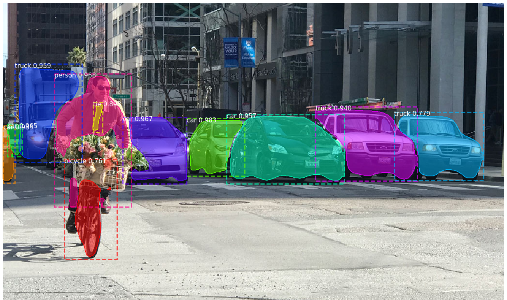

About
RESEARCH
NEWS
Contact
Contact US
Computer Vision
&
Machine Learning
Object Localization and Identification in Maritime Videos

Identifying Structures in Aerial Imagery
Give us your data!
Now more than ever, we are looking to test our algorithm on various real world data.
Donate Data